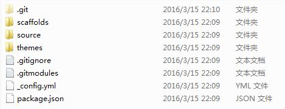
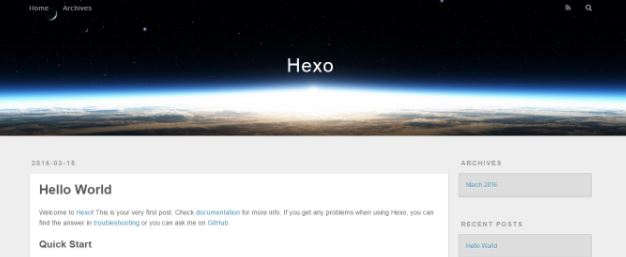
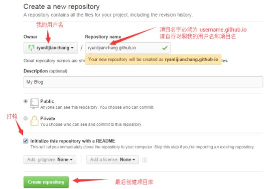
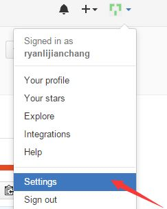
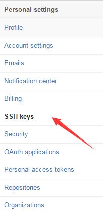
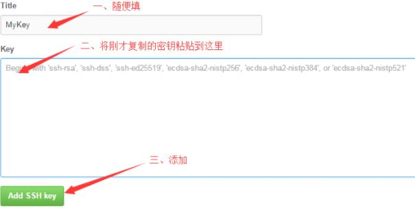
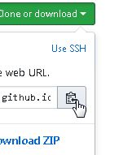
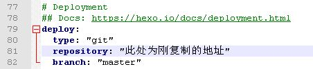
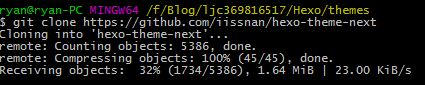

Hexo 是一个快速、简洁且高效的博客框架。Hexo 使用 Markdown（或其他渲染引擎）解析文章，在几秒内，即可利用靓丽的主题生成静态网页。
首先下载安装Git和Node.js
Git 官网地址 https://git-scm.com
Node.js 官网地址 https://nodejs.org
Git安装完毕后右键菜单会出现Git GUI here 和 Git bash here
一、Hexo安装
桌面右键鼠标，点击Git Bash Here，在弹出的窗口中输入以下两条npm命令即可安装
npm install hexo-cli -g
npm install hexo –save
二、Hexo初始化配置
在本地创建Hexo文件夹，根据自己喜好建立目录（如F:\Blog\Hexo），直接进入F:\Blog\Hexo文件夹下，右键鼠标，点击Git Bash Here，进入Git命令框，执行以下操作。
hexo init
npm install
安装 Hexo 完成后，Hexo 将会在指定文件夹中新建所需要的文件。Hexo文件夹下的目录如下：

安装下列Hexo插件
npm install hexo-generator-index –save
npm install hexo-generator-archive –save
npm install hexo-generator-category –save
npm install hexo-generator-tag –save
npm install hexo-server –save
npm install hexo-deployer-git –save
npm install hexo-deployer-heroku –save
npm install hexo-deployer-rsync –save
npm install hexo-deployer-openshift –save
npm install hexo-renderer-marked@0.2 –save
npm install hexo-renderer-stylus@0.2 –save
npm install hexo-generator-feed@1 –save
npm install hexo-generator-sitemap@1 –save
本地查看效果
执行下面语句，执行完即可登录localhost:4000查看效果
hexo generate
hexo server
登录localhost:4000，即可看到本地的效果如下：

将博客部署到Github Pages上
登录Github账户
创建项目代码库,名字username.github.io #username 替换成你自己的
创建要点如下：

配置SSH密钥
配置Github的SSH密钥可以让本地git项目与远程的github建立联系，让我们在本地写了代码之后直接通过git操作就可以实现本地代码库与Github代码库同步。操作如下：
创建一对新的SSH密钥(keys)
ssh-keygen -t rsa -C “your_email@example.com“ #这将按照你提供的邮箱地址，创建一对密钥
Generating public/private rsa key pair.
Enter file in which to save the key (/c/Users/you/.ssh/id_rsa): [Press enter]
直接回车，则将密钥按默认文件进行存储。此时也可以输入特定的文件名，比如/c/Users/you/.ssh/github_rsa
接着，根据提示，你需要输入密码和确认密码（不用密码的话，直接回车，所以每次push就只管回车就行了）。相关提示如下：
Enter passphrase (empty for no passphrase): [Type a passphrase]
Enter same passphrase again: [Type passphrase again]
输入完成之后，屏幕会显示如下信息：
Your identification has been saved in /c/Users/you/.ssh/id_rsa.
Your public key has been saved in /c/Users/you/.ssh/id_rsa.pub.
The key fingerprint is:
01:0f:f4:3b:ca:85:d6:17:a1:7d:f0:68:9d:f0:a2:db your_email@example.com
在GitHub账户中添加你的公钥
运行如下命令，将公钥的内容复制到系统粘贴板(clipboard)中。
clip < ~/.ssh/id_rsa.pub
接着：
登陆GitHub,进入你的Account Settings.

2.选择SSH Keys

3.粘贴密钥，添加即可

测试
可以输入下面的命令，看看设置是否成功
ssh -T git@github.com # 此处无需改动
The authenticity of host ‘github.com (207.97.227.239)’ can’t be established.
RSA key fingerprint is 16:27:ac:a5:76:28:2d:36:63:1b:56:4d:eb:df:a6:48.
Are you sure you want to continue connecting (yes/no)?
输入yes ，然后会看到：
Hi cnfeat! You’ve successfully authenticated, but GitHub does not provide shell access.
设置用户信息
Git会根据用户的名字和邮箱来记录提交。GitHub也是用这些信息来做权限的处理，
$ git config –global user.name “abc” # 此处随便填个名字
$ git config –global user.email “abc@gmail.com“ #填写自己的邮箱
四、将本地的Hexo文件更新到Github的库中
登录Github打开自己的项目 username.github.io
复制地址

打开本地Hexo文件夹（如F:\Blog\Hexo），用记事本修改_config.yml文件
在配置文件里作如下修改，保存

在Hexo文件夹下执行git bash here
hexo g
hexo d
输入github的账号和密码，博客对应的地址是 username.github.io
更换hexo主题
进入Hexo官网主题 https://hexo.io/themes/index.html
进入喜欢主题的github地址，复制其当前网页地址
克隆主题
再打开Hexo文件夹下的themes目录（F:\Blog\hexo\themes），右键Git Bash here 在命令行输入:
git clone https://github.com/iissnan/hexo-theme-next #此处为喜欢的主题的github网页地址
下载中，等待下载完成：

修改Hexo配置文件
下载完成后，打开Hexo文件夹下的配置文件_config.yml
修改参数为：theme: hexo-theme-next
部署主题，本地查看效果
返回Hexo目录，右键Git Bash here 输入
hexo g
hexo s
打开浏览器，输入 http://localhost:4000/ 即可看见我们的主题已经更换了
然后部署到Github上
打开Hexo文件夹，右键Git Bash here 输入
hexo clean
hexo g -d
打开username.github.io 即可查看效果
写文章,添加图片
安装图片插件
npm install https://github.com/CodeFalling/hexo-asset-image –save
修改hexo文件夹下_config.YML文件，将 post_asset_folder后面改为 true
本地hexo目录下，右键 git bash here 输入
hexo n “文章标题”
会在项目 \Hexo\source_posts 中生成 文章标题.md文件和同名的文件夹 ，用编辑器打开编写即可 ，同名文件夹用来存放本文章需要用到的图片
文章写完后，hexo 文件夹下 git bash here
hexo g #生成
hexo d #部署
绑定域名
打开 username.github.io , username替换成你自己的，点击上面的Settings -下拉、找到 Custom domain 输入你的域名，然后Save
最后打开你的域名试试看，免费域名可以在freenom 上获得,也有收费域名可选择
freenom官网 https://freeweibo.com/